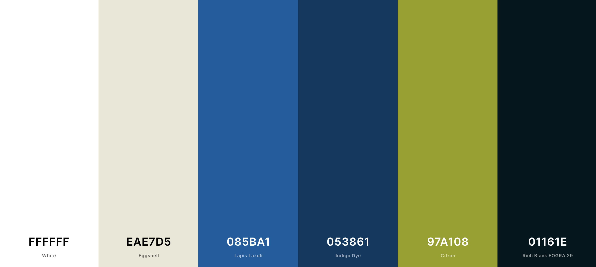

Color Palette:

The main color of the site will be
"Lapis Lazuli: #085BA1"
which
will be used for the header and background elements.
The secondary color for the site will be
"Egg Shell: #EAE7D5" Which will be used for background elements as well as some headline structures.
Accent colors include:
The key accent color will be"Citron: #97A108".
Being a bright color it will be used sparingly on things
such as Call-To-Action locations, navigation and link hover.
"Indigo Dye: #053861"
This color will be used as an accent color, for subheader banners,
smaller sub header type color.
Lastly, the black that will be used is
"Rich Black FOGRA 29: #01161eff".
It will be used for body copy and various other small elements to anchor the design and boost contrast to ensure accessibility reading for all site visitors.
Color Theory:
Partial-Triad Color Scheme
The slightly warmer, subdued hues are found to be more appealing to a target audience of females between the ages of 40 - 50 years.
Blue is a color that is across the board favored by all demographic groups. It portrays a sense of trust, strength and dependability —all characteristics of Sheila and the work she is doing with her dementia clients and families.
These are attributes that a client seeking consulting services would feel comforted by as they as finding themselves running out of options for their loved one. Blue is also used by many other top brands such as
- Volkswagen
- General Electric -GE
- Dell
- American Express
It also is a color that is, in various shades, highly favored
amongst age categories of 30-55, which span the site's target
audience.
Green is used as an accent color to allow a noticeable contrast in order to direction the site visitors to the next step/piece of information.
Peace and growth are characteristics often derived from the color green. Bringing a harmonious element of comfort and satisfaction for visitors that Sheila's services will be the peaceful comfort they are seeking in a difficult journey.
Color Codes:
#085ba1